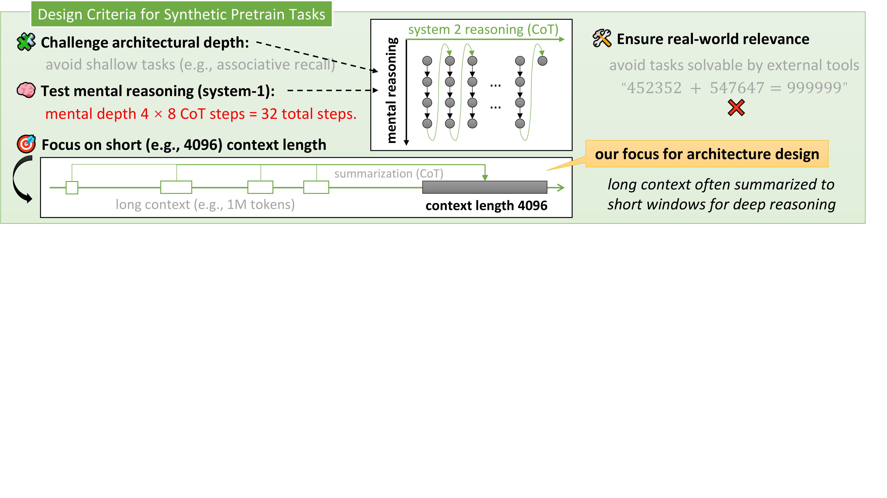

- Challenge depth — avoid shallow associative recall; require hierarchical, multi-layer reasoning
- Mental reasoning — test System-1 thinking without Chain-of-Thought; mental depth 4×8 = 32 steps
- Short context focus — fixed 4096-token dense contexts; avoid unstable length generalization
- Real-world relevance — target broadly applicable skills (reasoning, knowledge); avoid tool-delegatable tasks

Four criteria ensuring synthetic tasks isolate meaningful architectural differences